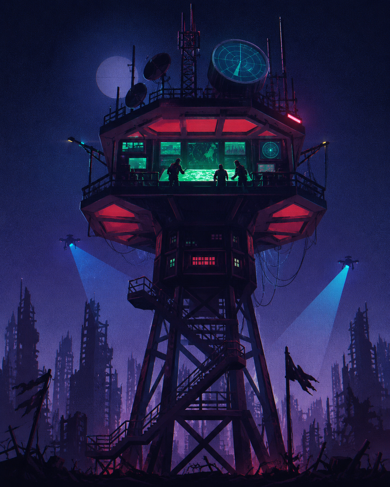

📡
REGISTRO DO RADAR
O silêncio também é informação. Uma junção que preserva todos os pontos permite perceber onde o mapa não recebe sinal; a junção inversa revela sinais que ainda não possuem uma localização cadastrada.

O radar detecta sinais em vários pontos da cidade, mas nem todo sinal possui uma localização registrada. Cruze o mapa com os sinais para descobrir onde há atividade — sem perder os pontos silenciosos.
MISSÃO 06 — MAPEAR A ZONA| ID | PONTO | ZONA | STATUS |
|---|---|---|---|
| 01 | NORTE-01 | NORTE | ATIVO |
| 02 | SUL-02 | SUL | ATIVO |
| 03 | LESTE-07 | LESTE | SILÊNCIO |
| 04 | OESTE-03 | OESTE | ATIVO |
| 05 | CENTRO-04 | CENTRO | SILÊNCIO |
| 06 | PORTO-09 | PORTO | ATIVO |
| ID | SINAL | PONTO | INTENSIDADE |
|---|---|---|---|
| R-101 | SINAL A | NORTE-01 | 92% |
| R-102 | SINAL B | SUL-02 | 81% |
| R-103 | SINAL C | OESTE-03 | 67% |
| R-104 | SINAL D | NULL | 96% |
| R-105 | SINAL E | PORTO-09 | 73% |
| R-106 | SINAL F | NULL | 88% |
| PONTO | SINAL | INTENSIDADE | LEITURA |
|---|---|---|---|
| Nenhum cruzamento confirmado. | |||
O silêncio também é informação. Uma junção que preserva todos os pontos permite perceber onde o mapa não recebe sinal; a junção inversa revela sinais que ainda não possuem uma localização cadastrada.
Todos os pontos foram preservados e os sinais sem localização foram isolados para investigação. A central agora enxerga os vazios do mapa.